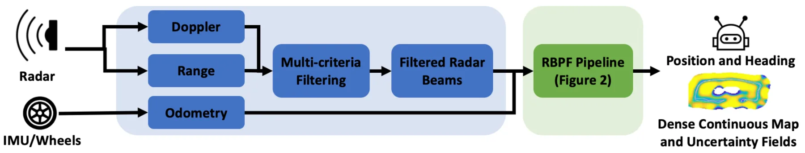
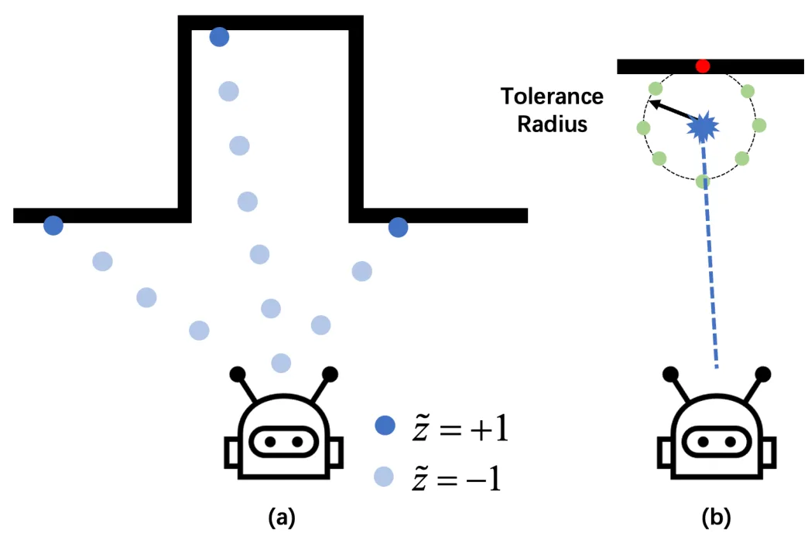
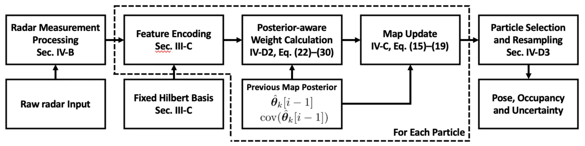
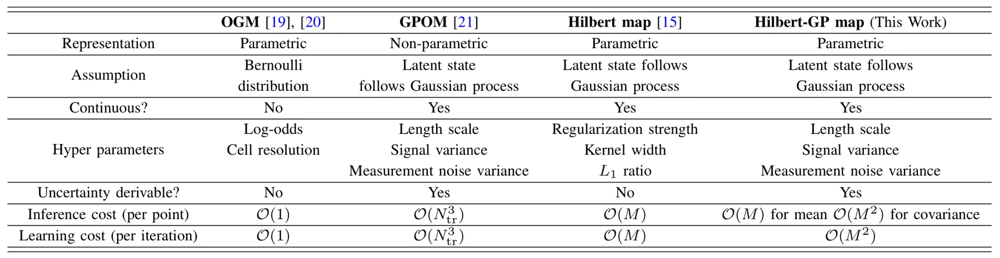

RICH-SLAM：带增量连续 Hilbert 映射的雷达 SLAMRICH-SLAM: Radar SLAM with Incremental and Continuous Hilbert Mapping
今天最直接命中 SLAM 主线的论文，覆盖雷达定位、连续占据地图、不确定度和移动机器人规划；需要重点核验实时性、粒子数/地图秩选择和与现有雷达/LiDAR SLAM 的对比。
一句话工作总结
RICH-SLAM 用粒子滤波后端和 Hilbert 空间降秩 GP，把稀疏雷达量测转成连续、带不确定度的占据地图。
摘要
雷达传感器因对恶劣天气和光照条件具有天然鲁棒性，越来越适合机器人 SLAM；但雷达量测相比 LiDAR 和视觉更稀疏、噪声更强，使得构建稠密、连续且一致的地图很困难。RICH-SLAM 提出一个雷达 SLAM 框架：后端采用 Rao-Blackwellized particle filter，以粒子滤波估计位姿、以 Kalman filtering 更新地图；地图端采用增量 Hilbert 空间降秩 Gaussian Process 映射，使稀疏雷达输入也能形成连续且带不确定度的占据表示；此外提出 posterior-aware particle weighting，用地图参数完整后验分布进行更稳健的 likelihood 评估。作者在自采数据和公开 ColoRadar 数据集上展示了连续占据地图构建和不确定性感知规划能力。
Simultaneous localization and mapping using radar sensors has gained increasing attention due to radar's inherent robustness to adverse weather and lighting conditions. However, radar measurements are characteristically sparse and noisy compared to LiDAR and visual data, posing significant challenges in achieving dense, continuous, and consistent map representations. In this paper, we present RICH-SLAM, a radar SLAM framework designed to address these challenges. Our approach features a Rao-Blackwellized particle filter-based back end that employs particle filtering for pose estimation and Kalman filtering for map updates. We propose an incremental Hilbert-space reduced-rank Gaussian process mapping strategy that enables continuous and uncertainty-aware map representations given sparse radar inputs. We further introduce a posterior-aware particle weighting scheme that leverages the full posterior distribution of map parameters for more robust likelihood evaluation. Experiments on self-collected and public ColoRadar datasets show that RICH-SLAM constructs continuous occupancy maps from sparse radar measurements and supports uncertainty-aware planning for mobile robots.
中文解读摘录
- 链接：abs / PDF；作者：Bingbing Zhang, Huan Yin, Yang Xu, Shuo Liu, Shaojie Shen, Fumin Zhang, Wen Xu；类别：cs.RO；采集 score=15。
- 核心思路：针对毫米波/雷达量测稀疏且噪声强的问题，用 Rao-Blackwellized particle filter 估计位姿，并用 Kalman filtering 增量更新 Hilbert 空间降秩 Gaussian Process 占据地图。
- 方法要点：把地图表达成连续、可给出不确定度的函数表示；posterior-aware particle weighting 在粒子权重中利用地图参数完整后验，而不是只看点估计 likelihood。
- 关注点：这是今天最直接的 SLAM 论文，适合重点看其雷达前端观测模型、粒子数/地图秩与实时性的权衡、ColoRadar 上和 LiDAR/雷达 SLAM baseline 的定位与地图一致性对比，以及不确定度地图如何服务规划。
图表/页面预览
{kind=link}

{kind=link}

{kind=link}

{kind=link}
